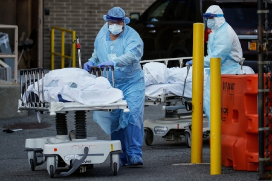

India had logged 1,65,553 infections in a day.Dr Samiran Panda, additional director general of the Indian Council of Medical Research (ICMR) has said India’s active Covid curve would begin to flatten within three months in areas that had recently experienced a surge, according to a report. India reported 1.4 lakh new Covid-19 cases on Saturday, and active infections are around 4.8 lakh.Dr NK Arora, Chairman of the NTAGI Covid working group told Times of India that Global data and our own experience over the last five weeks show that Omicron infections are mostly asymptomatic or mild. “Few seriously ill hospitalised patients had other co-morbidities or were over the age of 60. The overall hospitalisation rate for people affected by Omicron is 1-2 percent, which is significantly lower than the rate of people requiring hospital care during the Covid wave caused by the virus Delta,” he said.
Around 13,300 beds are still available for patients in Delhi hospitals. It has been decided to increase the number of beds. The Delhi government is ready to deal with the most serious situation. Delhi’s health system is fully prepared to prevent this wave of coronavirus and provide timely treatment to all the people of the state,” Jain said.Among the 14 hospitals, 1,500 normal and 330 ICU beds are being increased in Indira Gandhi Hospital, 750 normal and 500 ICU beds in Lok Nayak Hospital, 750 normal and 400 ICU beds in the GTB Hospital, 400 normal and 195 ICU beds in Burari Hospital, 300 normal and 150 ICU beds in Rajiv Gandhi Super Specialty Hospital, 100 normal and 50 ICU beds in Sanjay Gandhi Memorial Hospital, 150 normal and 75 ICU beds in Deep Chand Bandhu Hospital.
One hundred normal and 25 ICU beds are being augmented in Shree Dadadev Matri and Shishu Chikitsalaya, 100 normal and 25 ICU beds in Chacha Nehru Bal Chikitsalaya, 100 normal and 25 ICU beds in Acharya Shree Bhikshu Hospital, 100 normal and 25 ICU beds in Bhagwan Mahaveer Hospital, 150 normal and 100 ICU beds in Deen Dayal Upadhyay Hospital, 600 normal and 100 ICU beds in Ambedkar Hospital and 150 normal and 75 ICU beds in Dr Baba Saheb Ambedkar.
Meanwhile, the Delhi government has decided to increase 5,650 normal beds and 2,075 ICU beds for coronavirus patients in 14 hospitals, along with 2,800 beds in eight Covid-care centres, Health Minister Satyendar Jain said on Saturday. In a statement, he said the Delhi government is making all necessary arrangements in view of the rising coronavirus cases and the situation is normal.
Covid-19 Death Cases
Covid-19 Omicron India

Covid-19 Active Cases India Jan 9 Live Updates, Omicron Variant Cases in India, Coronavirus 3rd Wave, Covid-19 Booster Vaccine, Weekend Curfew rules: Today’s Covid numbers -- Delhi (22751 cases); Mumbai (19474 cases); Kolkata (8712 cases); Bengaluru (9020 cases); Chennai (6186 cases).Covid-19 Active Cases India Jan 9 Live Updates, Omicron Variant Cases in India, Coronavirus 3rd Wave, Covid-19 Booster Vaccine, Weekend Curfew rules: Today’s Covid numbers -- Delhi (22751 cases); Mumbai (19474 cases); Kolkata (8712 cases); Bengaluru (9020 cases); Chennai (6186 cases)
India reported over 1.5 lakh daily infections for the second consecutive day, taking the active caseload to 5,90,611. According to the Union Ministry of Health, the country recorded 1,59,632 fresh Covid-19 cases and 327 deaths in the last 24 hours ending Sunday, 9 am. The daily positivity rate stood at 10.21 per cent.
The following death cases for Covid-19
Rank
Country
People Infected
People Death
1
America
62,661,272
861,336
2
India
35,875,790
484,213
3
Brazil
22,558,695
620,142
4
UK
14,617,314
150,230
5
France
12,205,114
125,718
6
Russia
10,666,679
316,904
The Third Wave Covid-19
Surge in COVID cases in India indicative of 3rd wave
Given the rising numbers now, we need to prepare our health systems and remain alert to deal with any kind of situation that may arise. The situation looks alarming and there is no doubt that it is not a third wave.The country's daily COVID-19 cases crossed the 141,000 mark on Saturday as many Indian cities continue to see a spike in infections. With this, the tally of cases in the country has reached 35.3 million.Meanwhile, with 285 more deaths, the fatalities have risen to 483,463 nationwide.Health Ministry officials say omicron is the predominant strain circulating in Indian cities, however they have not declared that the third wave is setting in. We just need to deal with it now,-Rajesh Kumar
Noting that the sudden spike in cases was because of the omicron variant, he said the infection caused by this variant is less severe . But if the number of cases rises exponentially, hospitalizations could also increase and we must remain prepared for this, he added.The Health Ministry figures reveal that the country's commercial capital Mumbai and national capital New Delhi reported the most cases.During a news conference on Wednesday, Health Ministry officials said that the country has reported more than a 6.3% increase in cases in eight days and there was an increase in the case positivity rate from 0.79% on Dec. 29 to 5.03 % on Jan. 5.
There is increasing evidence on omicron based community transmission. In the next couple of weeks we could see the numbers rising dramatically and may reach a million positive cases per day by the end of the month.He also noted that there is a likelihood that while the virus spreads it may not lead to high official numbers, because of several factors.Testing rates in India are not that high and given the majority of people are expected to remain asymptomatic or with mild symptoms, many of them may not go for testing, -Himanshu Sikka
Last year, India saw a devastating second wave of COVID-19. The daily infection and fatality figures crossed over 400,000 and 4,500, respectively. The deteriorating virus situation then created havoc as hospitals ran out of oxygen supplies and the health system was overwhelmed.Indian Prime Minister Narendra Modi last month said the country has 1.8 million isolation beds, 500,000 oxygen-supported beds, 140,000 Intensive care units beds, 90,000 Intensive care units, and non-intensive care units beds, especially for children.
According to government data, over 60% of India’s eligible population has been vaccinated against COVID-19. As of Saturday morning, 1.50 billion doses have been administered so far to the country of some 1.4 billion people.What has now triggered more worries are the big political rallies that are happening in the poll-bound states. Five states will go to polls, this year and political parties are now deploying leaders to the campaign, even though the numbers are shooting up quickly.